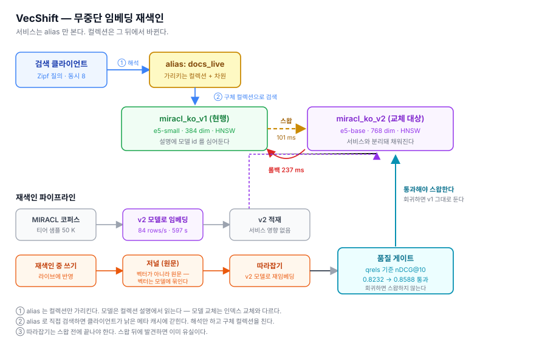
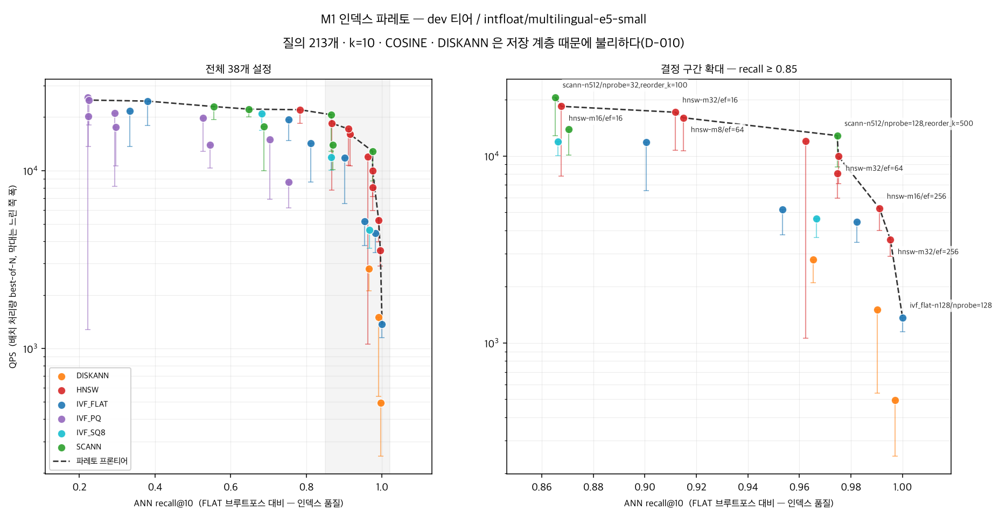

VecShift 리포트
Milvus 위에서 임베딩 모델을 무중단으로 교체하는 운영 하네스 · dev 티어 50 K 실측
이 리포트가 자랑하는 것은 “다운타임 0”이 아니다. 그 숫자를 세 번 잘못 선언할 뻔한 과정이다. 측정이 결론을 뒤집은 지점마다 무엇을 놓쳤는지 적었다.
1. 문제
임베딩 모델 교체는 언젠가가 아니라 반드시 일어난다. 모델이 바뀌면 벡터 공간 자체가 달라지므로 기존 인덱스는 전부 무효가 되고 부분 업데이트가 불가능하다. 전량 재계산과 재색인만이 답인데, 검색은 24/7 떠 있어야 한다.
현장의 대응은 대개 셋 중 하나이고 셋 다 대가가 있다.
- 점검 창을 잡고 내린다 — 다운타임이 발생하고, 데이터가 커질수록 창이 부족해진다.
- 컬렉션 두 개를 수동으로 굴린다 — 전환 시점 쓰기가 유실되고 되돌릴 절차가 없다.
- 검증 없이 갈아끼운다 — 품질 회귀를 배포 후에 발견한다.
2. 결과
기획서가 정한 성공 기준 8개 중 6개 달성 · 1개 미달 · 1개 판정 불가. 교체는 e5-small(384d) → bge-m3(1024d).
| 기준 | 목표 | 실측 | 판정 |
|---|---|---|---|
| 재색인 중 다운타임 | 0 s | 0 | 달성 |
| 쓰기 유실 | 0 건 | 0 / 48 | 달성 |
| 부하 중 오류 | 0 건 | 0 / 55,954 | 달성 |
| alias 스왑 소요 | ≤ 5 s | 70 ms | 달성 |
| 롤백 소요 | ≤ 10 s | 42 ms | 달성 |
| 품질 게이트 | 회귀 시 중단 | 통과 · 유의한 개선 nDCG@10 0.8890 → 0.9187 (대응 t=2.97) | 달성 |
| 재색인 중 p99 증가 | ≤ +15 % | 1초 창 해상도에서 노이즈와 구분 불가 | 판정 불가 |
| 전량 재색인 소요 | ≤ 30 min | 1.4 M 외삽 약 11.8 h (bge-m3) · 이 장비로는 도달 불가 | 미달 |

3. 측정이 결론을 뒤집은 지점
3.0 모델 품질 평가가 인덱스 오차에 오염돼 있었다
“인덱스 품질과 모델 품질을 섞지 말라”는 원칙을 문서에 적어두고, 평가 코드는 HNSW 기본값(ef=16)으로 검색하고 있었다. ANN 이 놓친 이웃만큼 점수가 깎였고, 깎인 양이 모델마다 달랐다.
| 모델 | ef 16 (기본) | ef 64 | ef 256 | ef 1024 |
|---|---|---|---|---|
| e5-small (384d) | 0.8416 | 0.8731 | 0.8890 | 0.8886 |
| e5-base (768d) | 0.8532 | 0.8750 | 0.8812 | 0.8812 |
| bge-m3 (1024d) | 0.8989 | 0.9187 | 0.9187 | 0.9187 |
ef=16 에서는 e5-base 가 e5-small 보다 높지만 포화하면 순위가 뒤집힌다. 이 오류는 에러 없이 네 개의 결정 기록에 퍼져 있었다 — 그중 가장 아픈 것은 “더 좋은 모델로 무중단 교체했다”는 W3 의 이야기가 사실은 개선이 아니었다는 것이다(e5-base − e5-small = −0.0078, t=−0.85).
발견한 계기는 bge-m3 를 추가해 같은 측정을 한 번 더 한 것이다. 같은 모델의 점수가 실행마다 0.8208 · 0.8291 · 0.8416 으로 흔들렸다 — 인덱스를 수십 번 다시 지으며 HNSW 그래프가 달라졌고, ef=16 에서는 그 차이가 점수에 그대로 나왔다.
→ 평가와 게이트를 ef=512 로 고치고, 세 모델 중 유의하게 나은 bge-m3 로 교체 대상을 바꿔 다시 쟀다.
| 대응비교 (ef=512, 213 질의) | nDCG@10 차이 | t |
|---|---|---|
| bge-m3 − e5-base | +0.0375 ± 0.0098 | +3.83 |
| bge-m3 − e5-small | +0.0297 ± 0.0100 | +2.97 |
| e5-base − e5-small | −0.0078 ± 0.0091 | −0.85 |
교훈 — 원칙을 문서에 적는 것과 코드가 그 원칙을 지키는 것은 다르다.
3.1 alias 스왑만으로는 무중단이 되지 않는다
첫 시도에서 서버 스왑은 56 ms 에 완벽했는데 서비스는 9 초 멈췄다.
MilvusException: vector dimension mismatch,
expected vector size(byte) 3072, actual 15363072 = 768 차원(v2), 1536 = 384 차원(v1). 클라이언트가 옛 모델로 만든 질의 벡터를 계속 보내고 있었다. alias 는 컬렉션을 가리킬 뿐 모델을 가리키지 않는다.
인덱스 교체라면 alias 스왑으로 충분하다. 모델 교체는 다르다 — 질의를 만드는 쪽도 같이 넘어가야 한다. 차원이 같은 모델이었다면 에러조차 나지 않고 조용히 엉뚱한 결과를 돌려줬을 것이다. 애초에 384 → 768 조합을 고른 이유가 여기서 드러났다: 시끄러운 실패가 조용한 오답보다 낫다.
3.2 alias 로 검색하면 클라이언트가 9 초 갇힌다
모델 해석을 붙였는데 다운타임이 9,081 ms 로 그대로였다. 재해석은 11 ms 인데도. 구간별로 보니 요청이 아예 없었다 — 에러조차. 검색 호출 자체가 블록됐다.
단서는 에러 메시지의 delegator ... for channel ... 였다.
pymilvus 는 컬렉션 메타를 이름으로 캐시한다. 그 이름이 alias 면 스왑 후에도
낡은 정보를 들고 재시도·백오프에 들어간다.
→ alias 는 해석만 하고 검색은 구체 컬렉션 이름으로 보낸다. 9 초 블록이 사라졌다.
3.3 “다운타임 0”을 두 번 잘못 선언할 뻔했다
1차 아티팩트 — 구체 컬렉션으로 고정했더니 다운타임 0, 오류 0 이 나왔다. 그런데 재해석이 0 회였다. 워커는 v1 을 30초 내내 때렸고 alias 가 어디를 가리키든 상관없었다. 옛 컬렉션은 스왑 뒤에도 멀쩡히 응답한다 — 에러가 신호가 되어주지 않는다. 무중단이 아니라 그냥 옛 모델을 계속 쓴 것이다.
2차 아티팩트 — 주기적 재해석을 넣으니 232 회 + 다운타임 0. 그런데 232번 물어봐도 대상이 안 바뀌었을 수 있다. 횟수는 “물어봤다”이지 “옮겼다”가 아니다.
→ 요청마다 실제로 어느 컬렉션을 쳤는지 기록했다. 이것만이 증거다.
교훈 — “에러가 없다”와 “동작했다”는 다르다.
3.4 쓰기 유실 검증에 음성 대조군을 뒀다
--skip-catchup 으로 일부러 유실을 만들어 검증기가 잡는지 먼저 확인했다.
이 대조군이 버그 세 개를 드러냈고 셋 다 “유실 0”이라는 통과 판정을 냈다.
- docid 가 실행 간 충돌 — 앞선 실행이 남긴 문서가 “있는 것”으로 잡혀 33건 중 7건만 누락으로 나왔다.
- alias 시작 상태 미보장 — 앞 실행이 롤백 없이 끝나면 alias 가 v2 에 남고, 쓰기가 처음부터 v2 로 직행해 유실이 0 이 된다. 실제로 219건 전부 v2 로 갔다.
- 검증 범위가 반대로 틀림 — 전체 저널로 대조하면 롤백 후의 정상 쓰기까지 유실로 센다.
| 따라잡기 | 스왑 시점 저널 | 유실 | |
|---|---|---|---|
| 음성 대조군 | 건너뜀 | 38 | 38 / 38 검출 |
| 본 시험 | 수행 | 45 | 0 / 45 |
교훈 — “검증이 통과했다”와 “검증이 동작한다”도 다르다. 통과를 주장하려면 실패를 만들어서 잡히는지 먼저 보여야 한다.
3.5 인덱스 파레토 결론이 측정 때문에 세 번 바뀌었다
1차 결론은 “HNSW 가 유용 구간을 지배한다”였다. 틀렸다.
- 파라미터 공간이 불공정했다 — SCANN 을
reorder_k없이 재서 recall 상한이 0.687 에 막혀 있었다. 넣으니 0.8653 으로 뛰며 프론티어에 진입했다. IVF_PQ 도m=8하나만 재고 있었다(m=96 에서 0.2244 → 0.7038). - QPS 가 재현되지 않았다 — 두 독립 실행에서 recall 은 중앙 차이 0.000000 인데 QPS 는 중앙 15 %, 최대 110 % 차이였다. 이 시점에 “SCANN 이 19 % 빠르다”고 쓸 뻔했고, 그 19 % 는 노이즈였다.
- 대표값이 틀렸다 — 분포가 느린 쪽으로만 튀는 것을 확인하고(중앙값/최대값 0.934) best-of-N 으로 바꾸니 재현성이 2.6배 좋아졌다(중앙 6.2 % → 2.4 %).
그 결과 노이즈 바닥 16 % 가 정해졌고, 아래 결론은 전부 이 기준으로 걸렀다.
| 설정 | ANN recall@10 | QPS | 판정 |
|---|---|---|---|
| scann nprobe=32, reorder_k=100 | 0.8653 | 20,612 | 구분 안 됨 |
| hnsw M=16, ef=16 | 0.8676 | 18,427 | |
| scann nprobe=128, reorder_k=500 | 0.9746 | 12,855 | 29 % 빠름 — 유의 |
| hnsw M=32, ef=64 | 0.9751 | 9,951 | |
| hnsw M=32, ef=256 | 0.9953 | 3,559 | recall 0.99+ 는 HNSW 뿐 |

4. 못 맞춘 것
4.1 전량 재색인 — 목표 30 분, bge-m3 로는 11.8 시간
| 티어 | 차원 | 소요 | 속도 |
|---|---|---|---|
| dev 50 K | 384 (v1) | 182 s | 274 rows/s |
| dev 50 K | 768 (e5-base) | 597 s | 84 rows/s |
| dev 50 K | 1024 (bge-m3) | 1,520 s | 33 rows/s |
레버를 전부 쟀다. 결론은 이 장비로는 도달 불가다.
| 측정 | rows/s | 의미 |
|---|---|---|
| 임베딩만 (batch=64 fp32) | 108.3 | 적재가 4.5배 빠르다 — 병목은 임베딩 |
| Milvus 적재만 | 489.6 | |
| batch 16 · 32 · 64 (fp32) | 107 · 108 · 108 | 64 이하는 평평한 천장 — 배치는 레버가 아니다 |
| batch 128 · 256 · 512 (fp32) | 96 · 77 · 53 | 키우면 오히려 느려진다 |
| 전 구간 fp32 → fp16 | 83.8 → 98.7 | +17.8 %, 품질 차이 없음 (ef=512 에서 Recall 213/213 동일) |
e5-base 기준 가장 낙관적인 예측(fp16 + 병렬화)도 약 3.0 시간, 30 분까지 5.9 배 모자란다. 그리고 품질이 유의하게 나은 bge-m3 는 e5-base 보다 재색인이 약 3 배 느리다(1.4 M 외삽 11.8 시간). 더 나은 모델을 고를수록 목표는 멀어진다 — 품질과 재색인 시간의 교환이다.
목표를 바꿔 “달성”으로 만들지 않았다. 30 분은 기획 단계에서 측정 없이 정한 숫자였다. 목표도 측정 전에는 가설이다.
측정하며 두 번 틀릴 뻔했다. 배치를 키우는 쪽만 재서 “64가 최적”이라 쓸 뻔했고(아래쪽을 재니 천장이었다), 큰 배치가 느린 이유를 “패딩 낭비”라 쓸 뻔했다(sentence-transformers 는 이미 길이순 정렬 후 배치를 나눈다).
4.2 재색인 중 p99 증가 — 판정할 수 없다
읽기 전용 스왑에서 스왑 창(t=10)의 p99 는 10.50 ms 였는데, 스왑이 없던 t=6 은 11.26 ms 였다. 1 초 창 하나의 p99 는 수천 요청 중 상위 1 % 몇십 개로 정해져서 아무 일 없어도 두 배씩 튄다. 처음 e5-base 로 쟀을 때 실었던 “전환 창 +94 %” 도 창 하나를 기준선과 비교한 것이라 믿을 수 없는 수치였다. 판정하려면 요청 단위 원시 표본을 남겨 전환 전후의 분포를 비교해야 한다 — 지금 하네스는 창별 요약만 저장한다.
세 가지 비용을 섞으면 안 된다.
- 전환 자체 — 1 초 해상도에서 노이즈와 구분되지 않는다.
- 1024 차원의 비용 — bge-m3 정상 상태 p99 는 전후 e5-small 창보다 9~20 % 높다. 기준선이 실행 안에서 10 % 흔들리므로 0~20 % 사이라고만 말한다.
- 이 하네스의 임베딩 경합 — 쓰기를 섞으면 bge-m3 서비스 중 지연이 점점 나빠져 롤백 후에도 계속된다. 쓰기만 뺀 실행은 30 초 내내 평평했다. 쓰기 워커가 검색 워커와 같은 프로세스에서 bge-m3 로 임베딩하기 때문이다. Milvus 의 비용이 아니다.
5. 이 수치를 읽을 때 알아야 할 것
- 단일 노트북 벤치다. 절대 수치는 의미가 약하다. 모든 결과는 동일 하드웨어·동일 데이터에서의 상대 비교로만 서술한다.
- 저장 계층이 외장 USB 다. 4k 랜덤 읽기가 내장 대비 8.6배 느리다(4,057 vs 34,945 IOPS). 순차는 2.1배였다. ANN 그래프 탐색이 정확히 이 손해를 본다. DISKANN 에 대해서는 아무 순위도 매기지 않는다 — 알고리즘이 아니라 스토리지를 쟀을 수 있다.
- 파레토 축에 메모리가 없다. PQ 가 존재하는 이유는 recall 도 QPS 도 아닌 메모리인데 축에 없다. dev 티어는 77 MB 라 메모리 압박 자체가 없다. “PQ 가 나쁘다”가 아니라 “이 벤치는 PQ 를 평가할 수 없다” 가 맞다.
- 골든셋이 213 질의뿐이다. MIRACL ko dev 가 그만큼이다. 모든 검색 품질 수치에 표준오차를 함께 낸다.
- 티어마다 정답 밀도가 다르다. dev 50 K 는 1 %, 전량 1.4 M 은 0.036 %. 티어가 다른 recall 을 같은 표에 넣지 않는다.
- 워킹셋이 작으면 디스크가 아니라 캐시를 잰다. 512 MiB 로 잡으면 랜덤 읽기가 8배 부풀려진다 —
--direct=1을 줘도 그렇다. 게스트의 O_DIRECT 는 macOS 호스트 캐시를 막지 못한다.
6. 재현
make venv-full # Python 3.12 + 의존성 (torch 포함)
make up # Milvus 3.0.1 Standalone
make ingest # MIRACL 적재 → 임베딩 → Milvus
make eval # qrels 기준 nDCG@10 · Recall@10
make sweep # M1 인덱스 38종 파레토
make ingest-v2 # v2(e5-base 768d) 적재
make shift # M2 부하 중 무중단 스왑 + 롤백
캐시는 전부 저장소 안(cache/)으로 떨어진다. 기본값인 ~/.cache 는
내장 디스크이고, 실제로 그것 때문에 내장을 0 바이트까지 채워 Docker VM 을
read-only 로 만든 적이 있다.